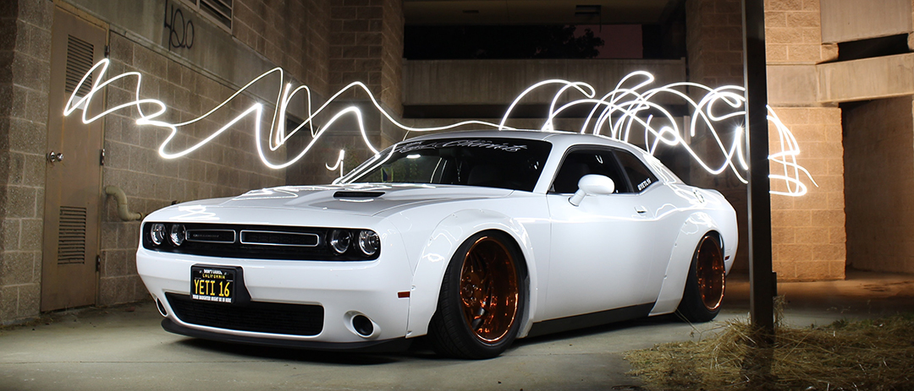

<div class="slides">
  <div style="--x: 0s"></div>
  <div style="--x: 4s"></div>
  <div style="--x: 8s"></div>
  <div style="--x:12s"></div>
</div>

<style>
  .slides {
    position: relative;
    overflow: hidden;
    height: 400px;
  }
  .slides>div {
    position: absolute;
    inset: 0;
    opacity: 0;
    animation: show 16s infinite;
    animation-delay: var(--x);
  }
  .slides>div>img {
    object-fit: cover;
    width: 100%;
    height: 100%;
  }
  @keyframes show {
    0% { opacity: 0; }
    8% { opacity: 1; }
    13%, 25% { 
      opacity: 1; 
      scale: 1.06; 
    }
    38% { opacity: 0; }
  }  

  body {
    background-color: black;
    padding: 3rem;
  }
</style>